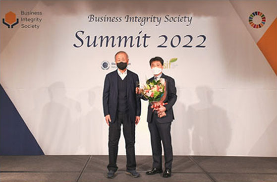
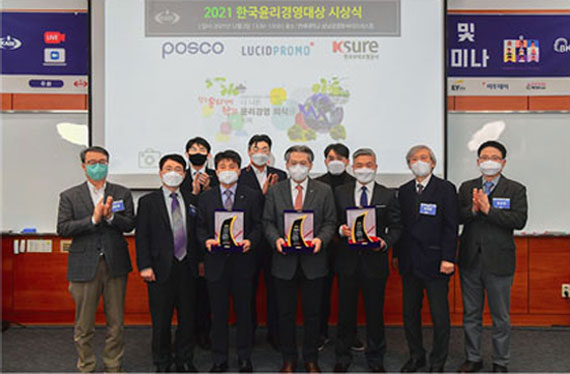

ESG 주요 활동
지배구조(Governance)
ESG 경영 지원 체계 구축
- 공사는 ESG 추진 전략 수립, ESG 위원회 신설, ESG 전문위원회 신설 등으로 내실있는 ESG경영 실천을 위한 업무 기반을 구축하였습니다.
청렴한 윤리문화 구축
- ‘공직자 이해충돌방지법’ 대응을 위한 관련 내규 제정(’22.4월), 부패방지 경영시스템 도입을 통한 ISO37001 인증 획득 등 공사는 청렴한 사내문화를 구축하기 위해 노력하고 있습니다.
인권경영 및 준법경영 실천
- 인권영향평가 실시, 피해자 중심의 인권침해 구제절차를 확립 등으로 인권경영을 실천하고 있으며, 소송 대응시스템 고도화, 관련 내부 규정 정비로 준법경영을 위한 노력 또한 지속하고 있습니다.
- 이러한 전사적인 노력으로 공사는 2022 BIS SUMMIT 반부패 어워드, 2021 한국윤리경영대상 등을 수상하는 쾌거를 이루었습니다.

